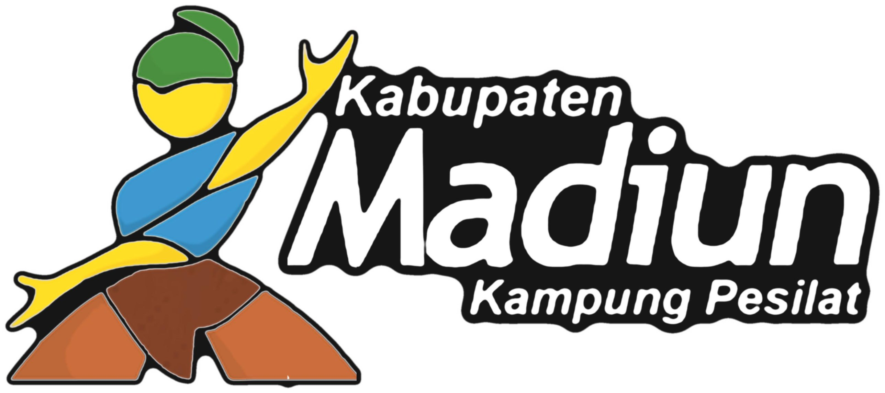
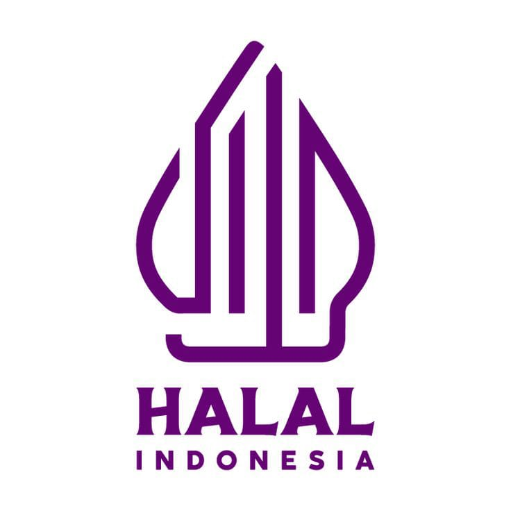
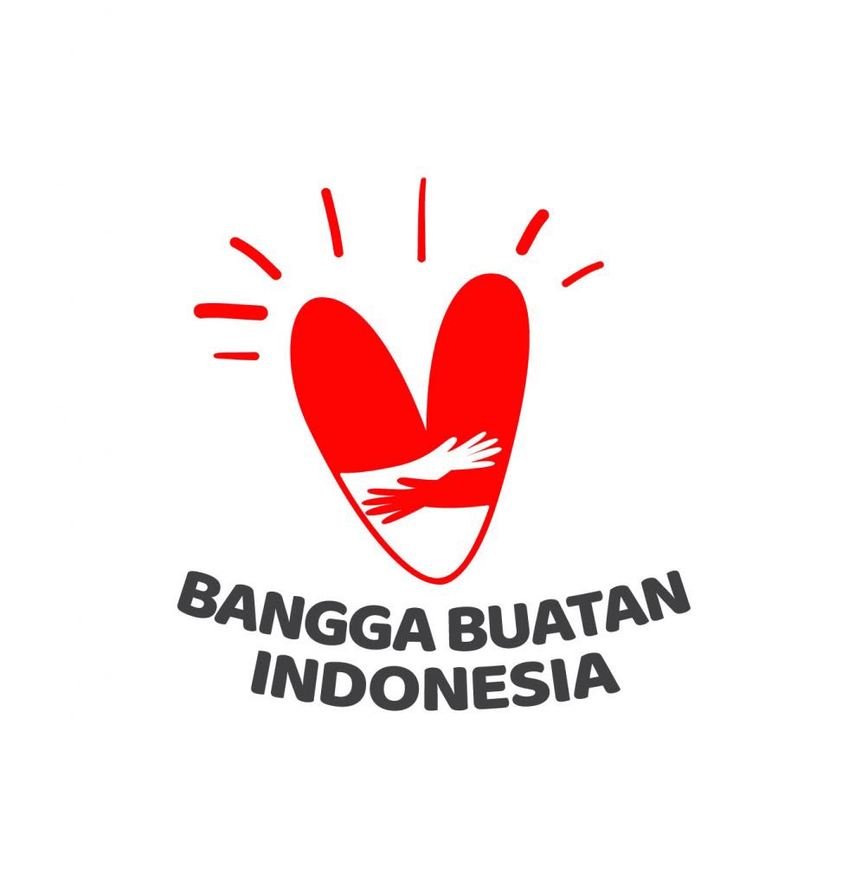

Madiun Kampung Pesilat
Identitas lokal Madiun.
BerandaSertifikasi
Sertifikasi & Identitas Lokal
Halaman informasi sertifikasi halal dan identitas lokal Chocobrem Djarubang.
Halal

Logo yang disediakan oleh pemilik brand
Identitas Lokal
Chocobrem Djarubang adalah camilan khas Madiun yang dibawa dengan semangat produk lokal.

Identitas lokal Madiun.

Chocolate ❤ Brem · Bangga Buatan Indonesia